CS184/284A Spring 2025 Homework 2 Write-Up
Link to webpage: Webpage
Link to GitHub repository: Github Repo
Overview
In this homework, I implemented Bézier curves and surfaces to smooth out rough meshes. Afterwards, I added Phong shading and mesh upsampling using edge-flip and edge-split operations. I enjoyed how both processes boiled down to pointer reassignments and element creations. I also thought upsampling would be a lot simpler, but I quickly learned otherwise.Section I: Bezier Curves and Surfaces
Part 1: Bezier curves with 1D de Casteljau subdivision
The de Casteljau algorithm is a recursive method used to evaluate Bézier curves. The idea is that you take a set of control points and interpolate between them using linear interpolations until only one point remains. I implemented the algorithm by creating a vector of Vector2Ds and allocating its size to be one less than the number of input points. Although it's usually implemented recursively, I chose an iterative approach: in each pass I performed all the lerps and stored the results in that vector.
|
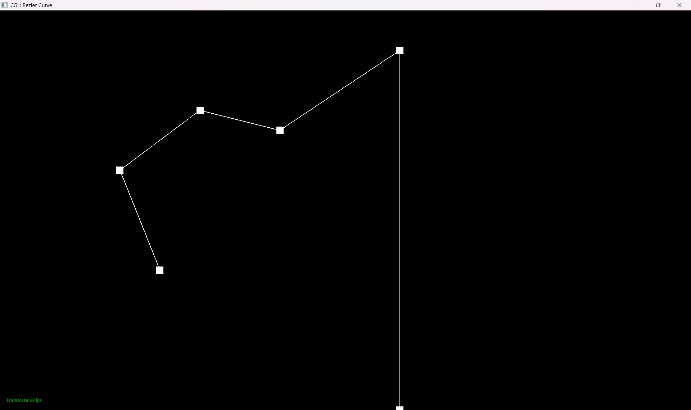
|
|
|
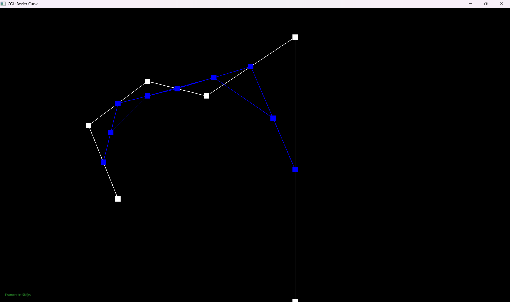
|
|
|
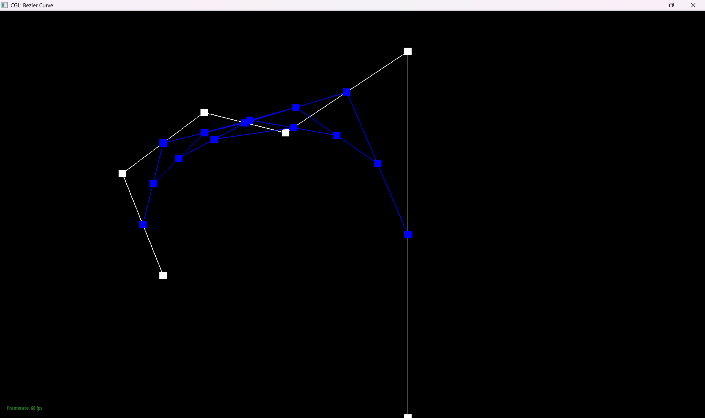
|
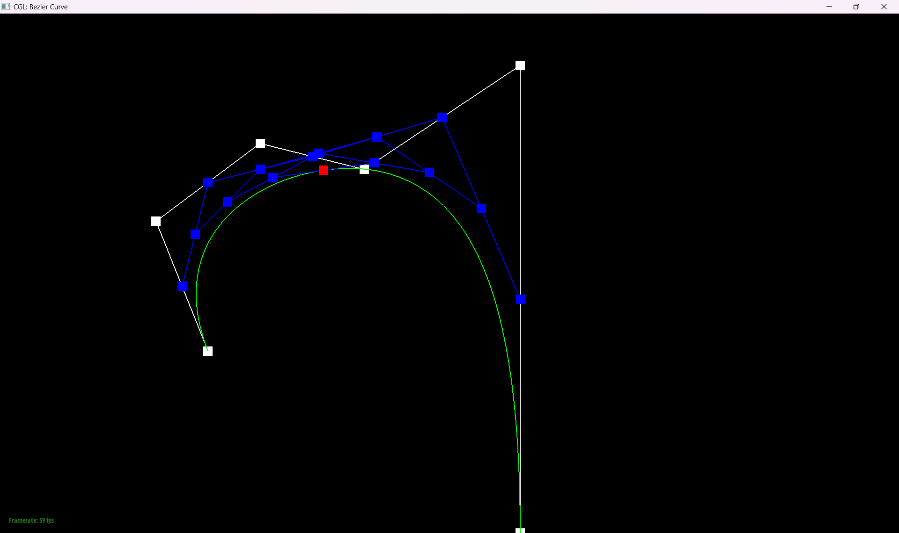
|
Here you can see the various steps of the algorithm taking place.
Part 2: Bezier surfaces with separable 1D de Casteljau
The de Casteljau algorithm extends to Bézier surfaces by applying it in both parametric directions (u and v) on an nxn grid of control points. First, you perform the algorithm along the u direction on each row of control points, which yields n intermediate points defining a Bézier curve in u. Then, you apply de Casteljau in the v direction to those intermediate points to obtain the final point on the surface at (u, v).
I implemented it by first writing the complete de Casteljau algorithm using my step function from part 1. This function repeatedly invokes step to interpolate the points until only one point remains on the curve. Next, I created a surface function that applies this algorithm in the u direction to produce a vector of intermediate points. Finally, the surface function returns the result of interpolating those intermediate points using the v parameter.
Section II: Triangle Meshes and Half-Edge Data Structure
Part 3: Area-weighted vertex normals
Initially, I attempted to calculate normals at the vertices directly, but then I discovered that each face provides its own normal function. To compute a normal, I retrieve one of its halfedges, follow its twin to the corresponding face, add that face's normal to a running Vector3D sum, and repeat this process around the vertex until I return to the starting halfedge. Finally, since Vector3D offers a normalize method, I normalize the accumulated sum and return the result.
|
|
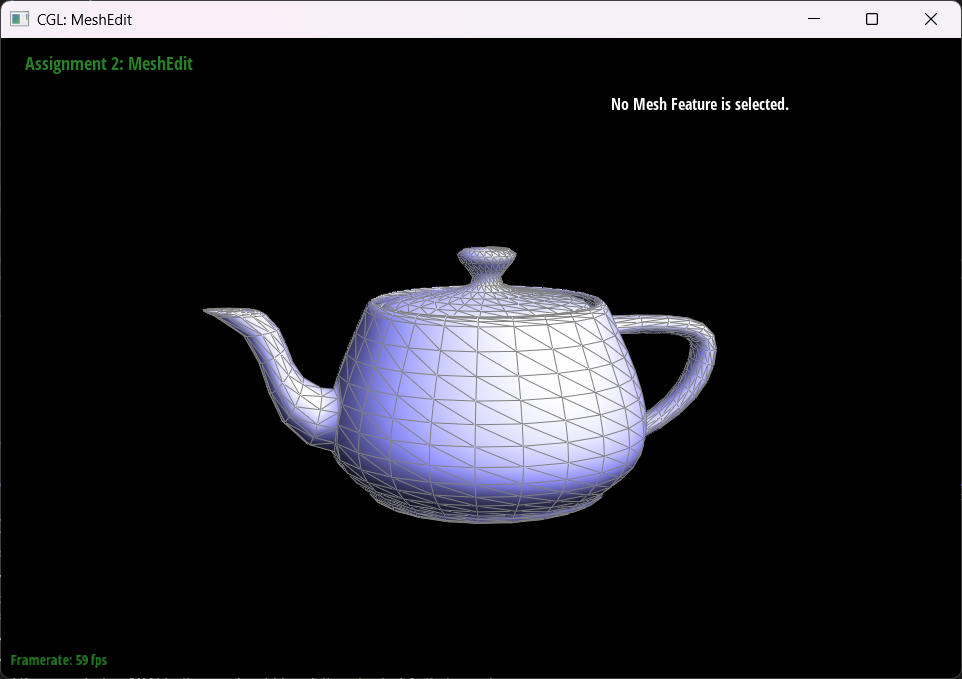
|
Part 4: Edge flip
I began by drawing a diagram of a pair of triangles, labeling all faces, halfedges, edges, and vertices. Next, I sketched the edge-flipped pair of triangles, again labeling every component and noting the changes. Then I stored each element from the original triangles in variables and reassigned them according to my notes. Fortunately, it worked the first time, so I only needed to simplify the code by removing any unchanged or unused variables.|
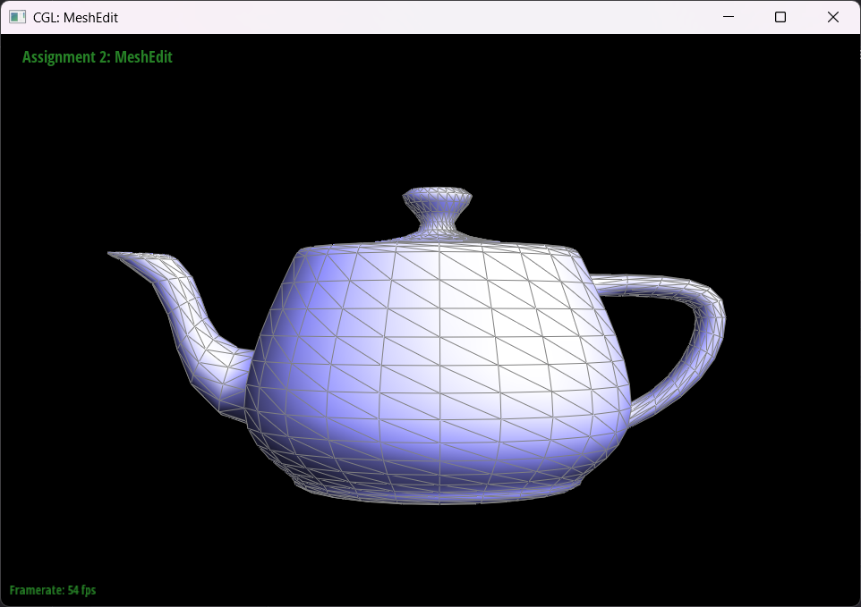
|
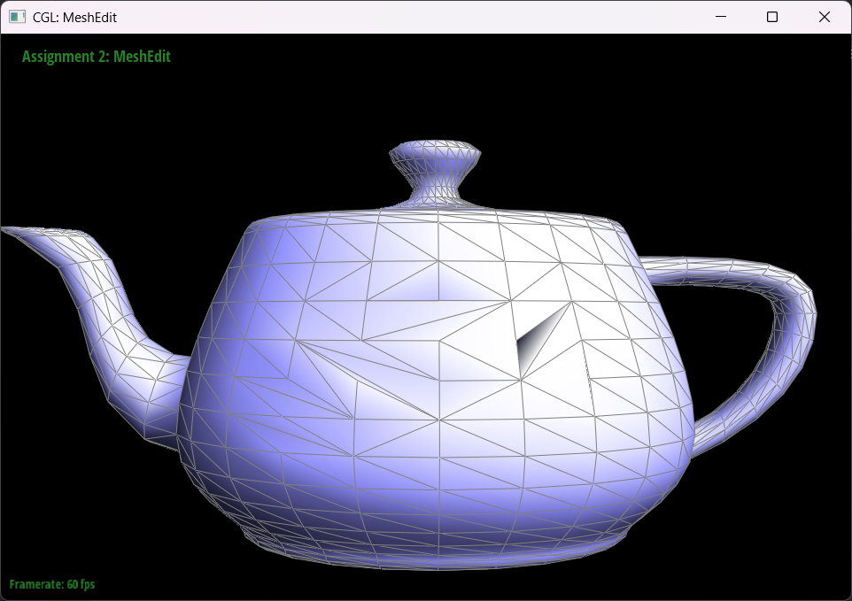
|
Part 5: Edge split
I implemented the edge split by drawing the before-and-after pairs of triangles and tracking every change. I also noted which new elements needed to be created. Then, in my code, I assigned all existing components to variables, created the new elements, and reassigned everything accordingly. Below, you can see my drawings.

|
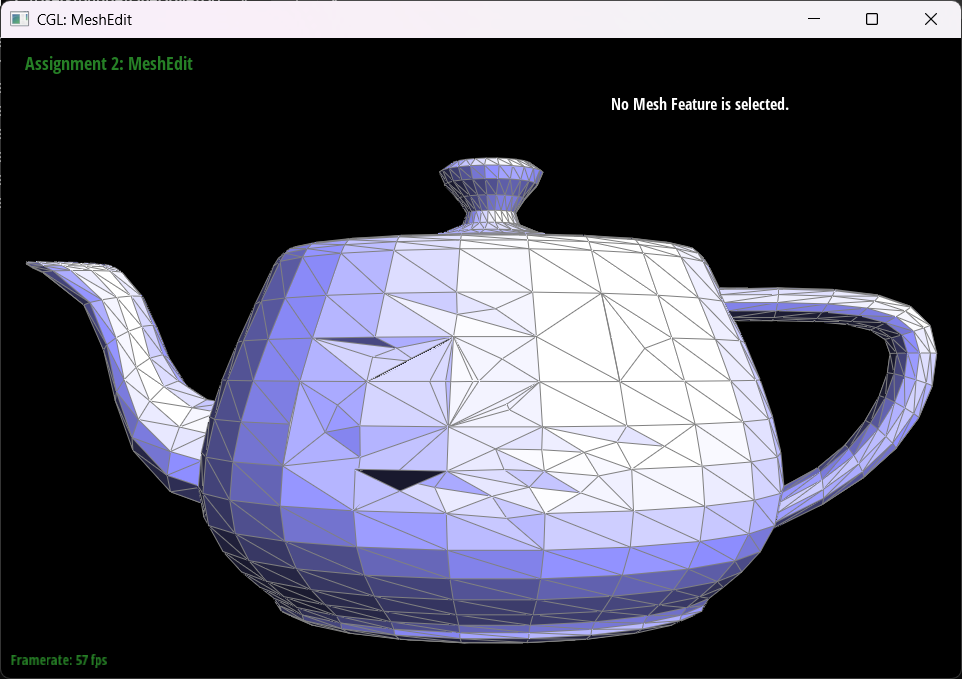
|
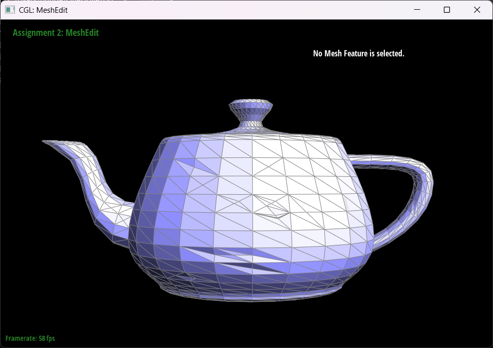
|
The only debugging I needed was fixing a hole that consistently appeared on the left. It turned out I'd missed a single assignment, which I spotted quickly.
Part 6: Loop subdivision for mesh upsampling
The first step in upsampling was computing the new positions for each
vertex. I iterated over all vertices in the mesh and performed the
following steps:
1. Determine the weight uu based on the vertex degree n
2. Sum the positions of all neighboring vertices by traversing its
incident halfedges.
3. Compute the new position using \[ 'np' = ((1 - n * u) * pos) + (u *
sum)\]
4. Set isNew to false.
Next, I implemented edge splitting by iterating over all edges and
performing the following steps:
1: Skip any edge marked isNew to avoid splitting edges that were just
created.
2: Retrieve all vertices involved in the split.
3: If the edge was a boundary, the midpoint would be at
mid = 0.5 * (v1->position + v2->position), otherwise it
would be at the normal
mid = (v1->position + v2->position) * (3.0f / 8.0f) + (v3->position +
v4->position) * (1.0f / 8.0f).
4: Then I would set isNew to false, add the edge to a vector, and redo
until we hit all edges.
5: Once all edges are collected, run the split on each one, assign the
stored mid position to the newly created vertex, and record each
old-to-new edge pair in another vector.
With the edges, we could now flip all of them through iteration. Although they should be the ones that connect an old and new vertex, I still had an if statement that checked if they really were doing that. If it was true, I would run flip edge on the edge.
Finally, I updated each vertex's position to the value stored in its newPosition variable. To prepare for a subsequent upsampling pass, I also set each vertex's isNew flag to false.
My most challenging bugs arose in the vertex-position assignment step.
Every time I upsampled, the mesh became a mess, even though I knew the
other components were correct. First, I implemented a boundary checker
that calculate the position as:
ver->newPosition = 0.75 * ver->position + 0.125 * tot
if the vertex lay on a boundary. When that didn’t help, I wasn’t sure
the checker was working, so I asserted that boundary vertices have
exactly two neighbors. I was stuck for a while because it still failed.
Eventually, I discovered that my calculation of u was off. I replaced my
earlier conditional logic with a single expression:
double u = (deg == 3 ? 3.0 / 16.0 : 3.0 / (8.0 * deg))
and even though it technially did the exact same thing, it finally
worked.
In the pictures above, you can see that after a few splits, the top of the torus appears thinner than the rest of the shape. In fact, all the original faces vary—thin at the top and thick at the bottom. Moreover, the post-split icosahedron still retains slightly visible corners (for example, on the left). I fixed this by selecting a vertex and reducing its degree with edge flips and additional splits before upsampling.
Above, you can see the cube after a few splits. It may look lopsided because the cube;s edges are unevenly divided. In the table, you can see that the edges on both sides aren;t oriented the same way, which causes the cube to become progressively biased toward one side with each split.
|
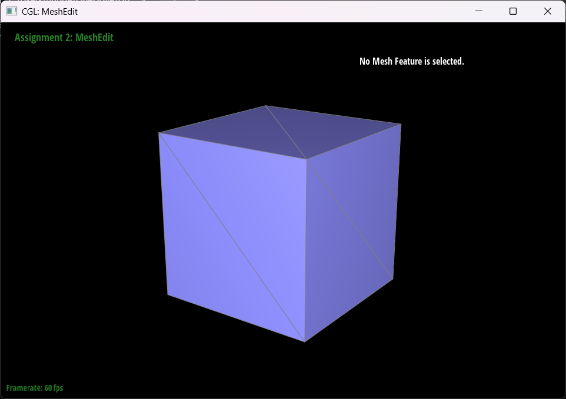
(notice the pattern of the edges) |
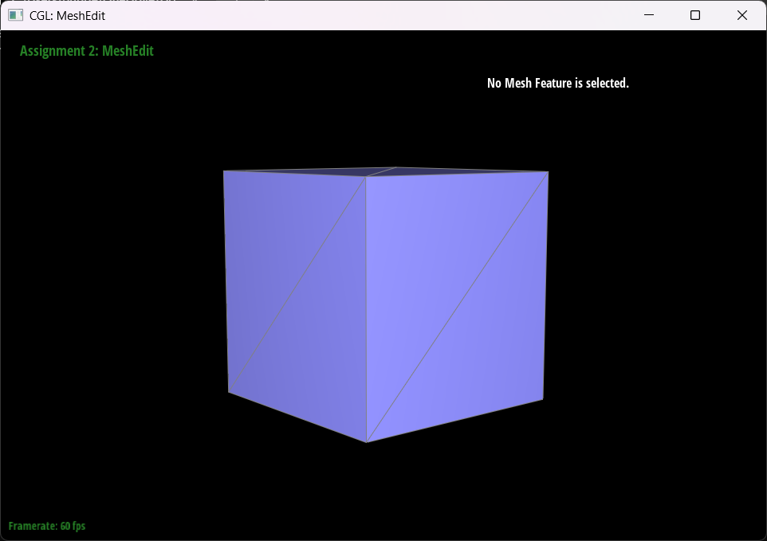
(very different pattern now) |
|
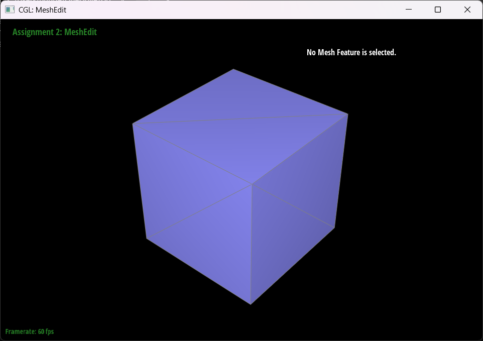
(pattern fixed) |
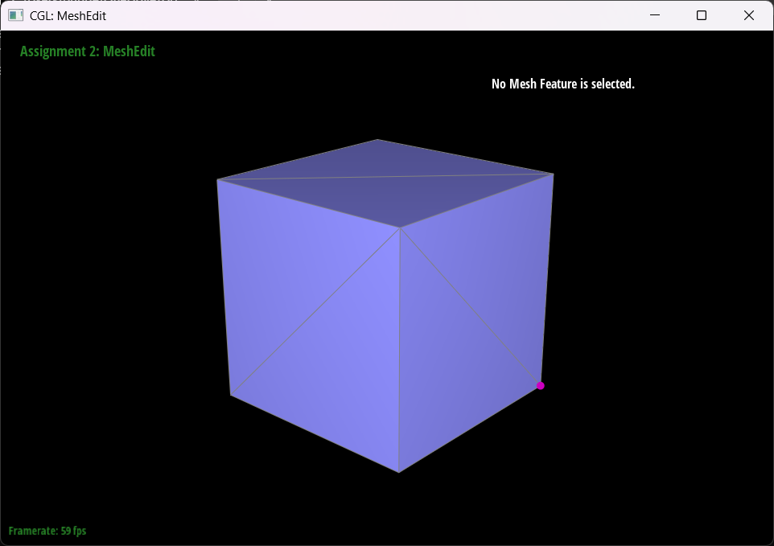
(pattern fixed) |
As you can see, after I ensured both sides of the cube had the same edge pattern, the cube became perfectly symmetric. This is because all operations now apply identically on both sides.